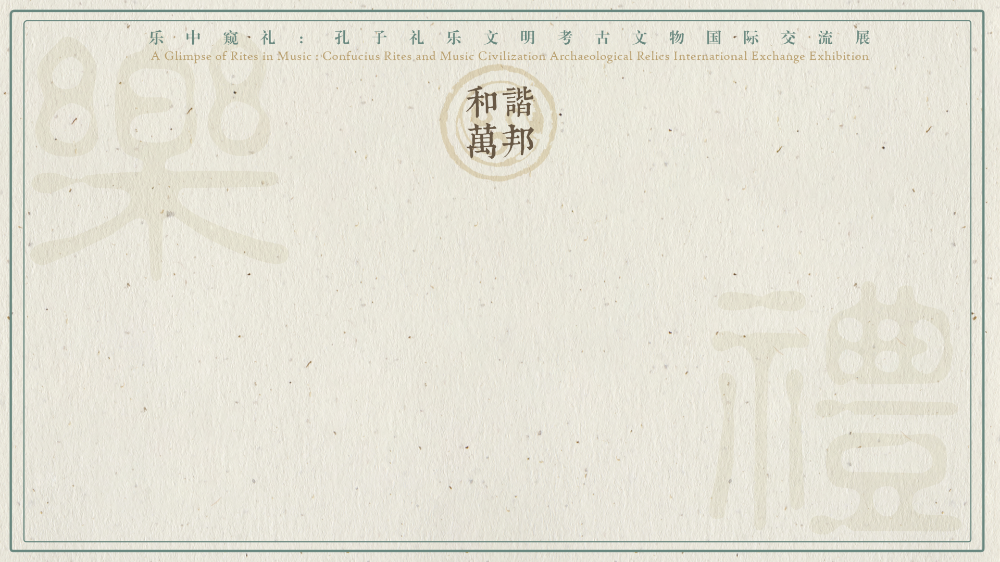

习近平总书记与人类命运共同体
“这个世界越来越成为你中有我、我中有你的命运共同体，和平、发展、合作、共赢成为时代潮流。”
——2013年3月，习近平总书记在莫斯科国际关系学院的演讲
“我国周边外交的基本方针，就是坚持与邻为善、以邻为伴，坚持睦邻、安邻、富邻，突出体现亲、诚、惠、容的理念。”
——2013年10月，新中国历史上首次周边外交工作座谈会
“中国人历来主张’世界大同，天下一家’。中国人民不仅希望自己过得好，也希望各国人民过得好。”
——2017年新年贺词
一倡百和：全球文明倡议的世界回响
“习近平主席提出全球文明倡议，传递的信息非常明确，要平等尊重彼此，接受差异性，加强不同国家人民间对话，这是不同文明发展的内在需求，也是我们共同的心声。”
——埃及中国友好协会副主席、埃及外交部前副部长 阿里·希夫尼
“明是多样的，但不同文明对全人类共同价值的追求是共通的。中国始终以开放姿态推动交流互鉴。习近平主席提出全球文明倡议，倡导全人类共同价值，让世界听到中国发出加强团结合作的强音。”
——俄中友好协会副主席 谢尔盖·萨纳科耶夫
“中华文明源远流长、博大精深，为人类文明进步作出巨大贡献并深刻影响了世界。”
——巴西执政党劳工党文化部全国书记 薇薇安·马丁斯
“作为汉学家，不论母语是什么，中文是我们统一的语言；不论来自哪种文明，我们共同的追求是人类文明进步。”
——巴基斯坦国立现代语言大学讲师 拉希达
“构建人类命运共同体理念不仅基于中华优秀传统文化，更基于人类文明多样性、全人类共同价值等各国人民共同关心的话题，将为人类破解时代难题、实现共同发展持续提供力量。”
——斯里兰卡科伦坡大学高级讲师 马欣达